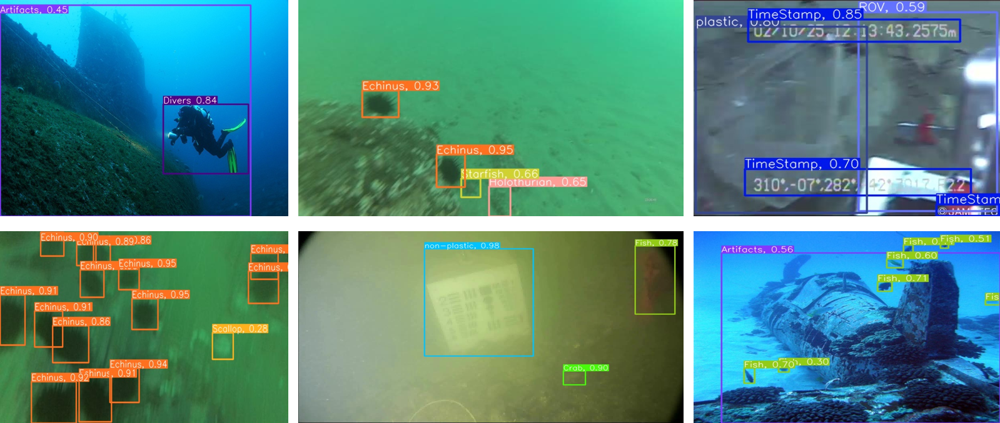
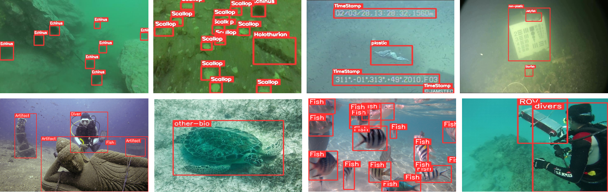
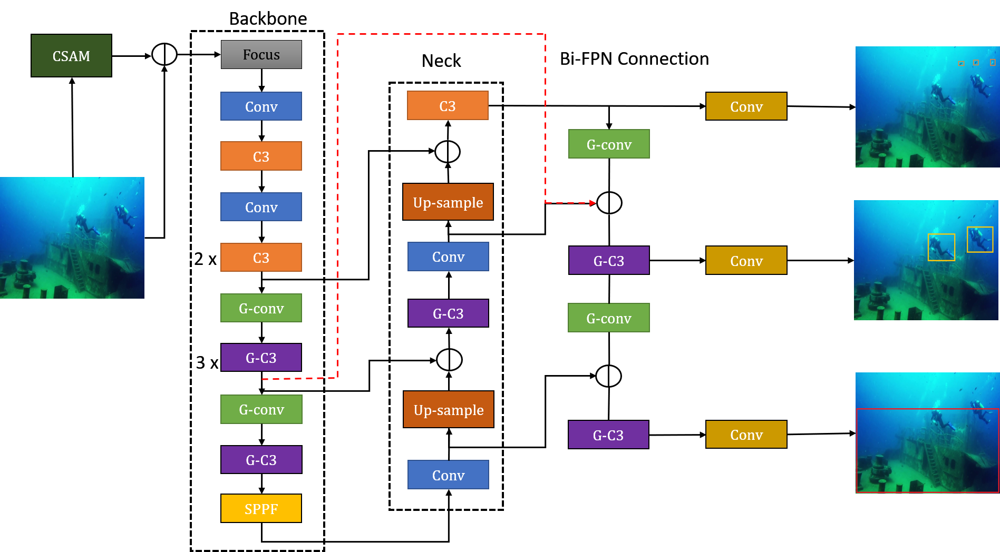
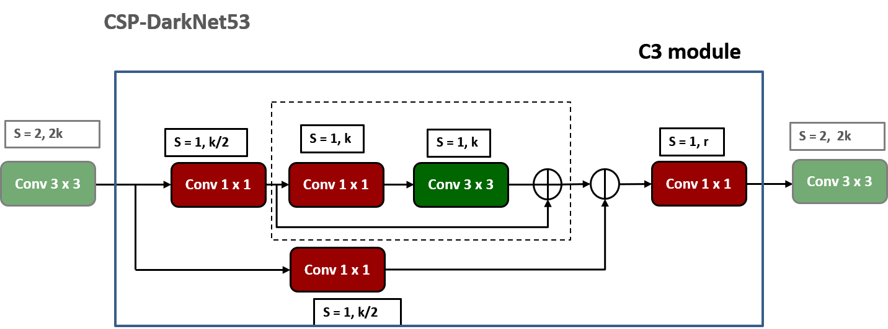
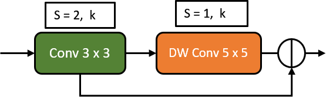
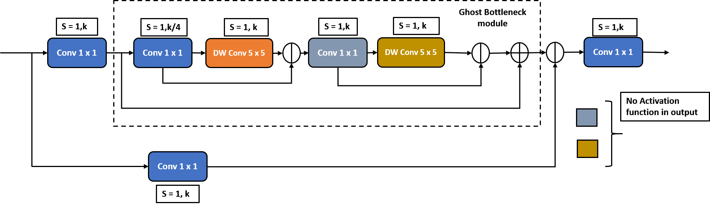
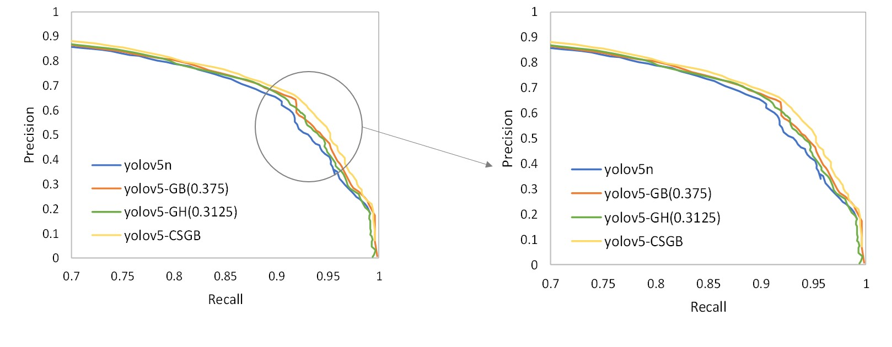

Research
Underwater Object Detection
Divers, Submarines, ROVs, Shipwrecks, etc...
Abstract
Remotely Operated Vehicles (ROVs) along with vision based underwater object detection techniques can assist underwater exploration and research by identifying specific objects, such as shipwrecks, marine life, and man-made debris. These object detection algorithms require large datasets for training. Since there are very few datasets available for underwater objects, in this paper, an Extended Underwater Object Detection dataset with 16 object categories (EUWOD-16) was constructed. This was achieved by building a new annotated dataset consisting of divers, artifacts and various marine species, and merging it with existing underwater object detection datasets by redefining their annotations. Later, the dataset was evaluated by a modified YOLOv5n architecture with GhostNet. This method involved the selective additions of ghost blocks in appropriate places to decrease the number of network parameters and FLOPs without a significant decrease in performance, and a Bi-FPN connection for a refined feature fusion pathway. The proposed model achieved higher accuracy at a comparatively lower number of parameters (and FLOPs) than both YOLOv5n and GhostNet.
Introduction
The tasks of underwater exploration, marine ecosystem study, seafloor mapping, historical wreck or artifact investigation, and underwater surveillance provide crucial insights into defense/military purposes for intrusion detection and target identification. It also helps in understanding the impacts of human activities on the oceans over time. This would help in developing effective strategies for Naval Forces.
Underwater object detection is challenging due to the factors such as low visibility, high noise, and color deviation, which could make it difficult to identify and track objects. Another set of challenges includes the requirement of accurate and stable detection models that could operate under resource constraints in real time. This is because underwater environments often have limited computational resources and data transmission capabilities. In addition to the aforementioned factors, the diversity and comprehensiveness of datasets are also crucial in building robust object detection models. The ability of the model to accurately classify a wide range of objects in practical scenarios is largely dependent on the diversity and number of classes present in the dataset. The existing datasets for underwater object detection mostly consist of aquatic creatures such as fish, echinus, holothurians, starfish, and scallops.

Example detection results from YOLO-CSGB model.
Proposed Dataset
A new dataset named UDAD is been proposed to include divers, underwater artifacts, fish, and other marine species. Also, several existing datasets such as DUO, UODD, Trash-ICRA19 and the Brackish Dataset have been merged with the proposed UDAD dataset to provide a diverse range of objects and underwater environments, forming a comprehensive dataset EUOD16. This dataset contains five distinct classes: ROV, artifact, diver, fish, and other-bio. The dataset comprises a total of 2,697 images collected from three different sources: The first source is the UIEB, an image enhancement dataset, which consists of 890 images depicting various scenes with statues, shipwrecks, and divers. However, only 671 images were selected out of that dataset, and remaining images with many clustered fishes were ignored, since the focus is on divers and artifacts. The second source is the SUIM, an underwater segmentation dataset, which contains 1,525 train and 110 test images with segmentation labels. From this dataset, total 1,533 images were selected and over-crowded fish images were discarded. The third source is a YouTube video from the channel Guillaume Nery, from which 493 frames were generated and selected where a diver was thoroughly or appropriately present. All the selected images are annotated using labelImg software, resulting in a total of 2,697 annotated images. The existing datasets were merged by refining the labels to form the combined dataset. Then the combined dataset is extended with the UDAD dataset to form EUOD16 (Extended Underwater Object Detection) with 16 different classes.

Example images from the EUOD16 Dataset where the first row images belongs to existing Datasets and the last row images belong to UDAD Dataset.
Methods
A modified YOLO-v5n (nano) model has been proposed. The proposed model, termed as YOLOv5-CSGB (Selective Ghosted Convolution with Bi- FPN), consists of GhostNet convolutions and Bi-FPN connection for creating more feature maps with less parameters and aggregating contextual information from multiple levels of the feature pyramid, respectively. The backbone of the YOLOv5 model is CSPDarknet-53, which is made up of repeating blocks of Cross Stage Partial Network (CSP) bottleneck, C3 layers and normal convolution layers. GhostNet is a cost-effective alternative to traditional convolutional blocks, characterized by a reduction in both the number of weights and floating-point operations (FLOPs). It has been demonstrated that traditional convolutions generate a significant amount of redundancy in the feature maps. Hence, this method advocates for the generation of only a certain percentage of feature maps via traditional convolution blocks, while the rest are generated via inexpensive linear operations, aided by Depthwise convolutions. Instead of converting all normal convolutions to Ghost modules, only specific convolutions were converted, called Selective Ghosting. Channel Sharpening Attention Module (CSAM) is a channel-wise attention mechanism introduced to enhance the expressiveness of the YOLOv5 model in object detection tasks, particularly in challenging underwater environments where stacking, blurring, and unclear edges can occur between objects due to the opacity of the water and shooting angles. Bidirectional Feature Pyramid Network (Bi-FPN) is a feature fusion method that combines multi-scale features from different levels of the backbone and neck of the model. So, the proposed model YOLOv5-CSGB uses selective ghosting to get higher number of feature without increasing model size and uses BiFPN for improving multi-scale detection capability and CSAM to improve the sharpness of the images at the input.

Architecture of the proposed YOLOv5-CSGB.

C3 (CSP Bottleneck with 3 convolution layers) Block.

Ghost Convolution Block.

Ghost-C3 Block. Here, C3 (CSP bottleneck layers) have been replaced with ghost convolution blocks.
Results
The system used for the conducted experiments has linux operating System with NVIDIA Tesla V100 32GB memory with CUDA 10.2. The programming language and framework used are python 3.9 and pytorch 1.8.0 respectively. All the models during the experiments were trained with batch size 8 and the learning rate starting at 0.01 for 200 epochs with SGD Optimizer. Quantitative analysis was performed and compared with the existing YOLOv5n and GhostNet models. The YOLOv5-CSGB achieves 4.1% increase in mAP@0.5-0.95 metrics in the EUOD16 dataset and 11.8%, 13%, and 7.9% increase in mAP@0.5-0.95 in the classes divers, artifact, and ROVs, respectively.

Qualitative results of YOLOv5n vs YOLOv5-GB(0.375) vs YOLOv5-GN(0.3125) vs YOLOv5-CSGB.

Precision-Recall Curve @ IOU = 0.5 for YOLOv5n vs YOLOv5-GB(0.375) vs YOLOv5-GN(0.3125) vs YOLOv5-CSGB.


 PySPARK
PySPARK